Big Data and MapReduce
Module 3: Big Data & MapReduce
Session 2 · Wed Oct 7
The MapReduce Paradigm + Checkpoint 3
Recap: What You Did Monday
Monday, in clusters of 3, you solved a counting problem with nothing but your own bodies, a shuffled pile each, and a rule about minimizing trips. Most clusters converged on the same shape:
| What your cluster did | What we’re naming it today |
|---|---|
| Each of you tallying your own pile, alone at your desk | Map |
| Carrying only a written tally to whoever “owned” that key | Shuffle/Sort |
| That teammate summing everything handed to them | Reduce |
Today: the same three ideas, precise definitions, and the actual code shape behind them.
Meet Map, Shuffle, Reduce
MapReduce is a programming pattern for big data: split the dataset into pieces, process each piece independently, then combine the results. It’s what your cluster did Monday, for any number of machines and any counting problem.
![Five columns left to right: Input, Map, Shuffle/Sort, Reduce, Output. Input has three gray boxes, "chunk 1", "chunk 2", "chunk 3", each with an arrow to its own green "map()" box in the Map column. In the Shuffle/Sort column, crossing purple arrows connect every map() box to both green reducer boxes, "reduce() key A" and "reduce() key B". Each reducer has an arrow to an Output box, "result key A" and "result key B". Under the diagram are two rows of labels. Row 1, who writes it: Map "you write", Shuffle/Sort "framework does it", Reduce "you write". Row 2, where it runs: Map "local, in parallel", Shuffle/Sort "crosses the network" in red, Reduce "local, in parallel".](diags/03-mr-phases.svg)
Each machine maps only its own chunk. The framework shuffles everyone’s output so that each key’s values end up together. One reducer per key reduces them to a final answer.
Map, Shuffle, Reduce, step by step

Monday’s Round 2, redrawn with the new names (salad left out to save space):
![Three horizontal bands, top to bottom. Above them, three gray boxes: "Branch 1: raw tickets", "Branch 2: raw tickets", "Branch 3: raw tickets", each with an arrow down into the Map band. Map band, subtitled "alone, in parallel": each branch has its own yellow tally box — Branch 1: burger 5, fries 3, pizza 2; Branch 2: burger 2, fries 6, pizza 5; Branch 3: burger 3, fries 2, pizza 1. No arrows connect branches in this band. Shuffle band, subtitled "the only trips": nine crossing arrows, color-coded by item, carry each branch's burger tally to one owner, each fries tally to a second owner, and each pizza tally to a third. Reduce band, subtitled "one owner per key": three blue boxes "owns burger", "owns fries", "owns pizza", with results burger = 10, fries = 11, pizza = 8. Caption: "Same shape as Monday, just relabeled."](diags/03-mapreduce-flow.svg)
Monday’s kitchen, step by step

The Map Phase: One Record In, Zero or More Pairs Out
A map function takes one input record and emits (key, value) pairs — nothing more.
map(record):
... extract what matters
from this one record ...
emit(key, value)| Problem | What map() emits |
|---|---|
| Count words in a line of text | emit(word, 1) for every word |
Total sales per region, from region, productID, saleAmount records |
emit(region, saleAmount) |
The same in both: one record in, small (key, value) pairs out. The mapper never looks at another record and never talks to another machine — just like tallying your own pile on Monday.
Think about it
A log file has one line per web request: timestamp, userID, status_code. You want to count how many requests resulted in each status code (200, 404, 500, …). What should map() emit?
Answer: emit(status_code, 1) for every line. It’s word count again, with a different field pulled out of the record. The reducer then sums the 1s for each status code.
The Shuffle/Sort Phase: The Framework’s Job
After every machine finishes its map phase, all the (key, value) pairs must end up grouped by key — every value for "gmail.com" in one place, every value for "yahoo.com" in another — regardless of which machine emitted them.
- It’s Monday’s “carry your tally to whoever owns that key” step — except the framework does the carrying, across a real network.
- You never write this step yourself. Hadoop and Spark do shuffle/sort automatically — it’s the one phase with no function you implement.
- It’s also the one phase that costs real network transfer, just as trips were Monday’s only real cost. Map and Reduce happen locally.
The Reduce Phase: Combine Each Group Into One Answer
A reduce function receives one key and the full list of values shuffled to it, and produces one final result for that key.
reduce(key, values):
total = sum(values)
emit(key, total)- It runs once per key, on whichever machine the shuffle sent that key’s values to — like the Monday teammate who “owned” a suit or menu item.
- Reduce doesn’t have to mean “sum”: it could be a maximum, an average, a count of distinct values — anything that combines a list into one answer.
Word Count Walkthrough
The “Hello World” of MapReduce — Monday’s activity, counting words instead of suits or menu items.
Input (two lines, so two mappers):
the quick brown fox
the fox jumped over the lazy dogMap phase — each mapper emits (word, 1) for every word in its line:
(the,1) (quick,1) (brown,1) (fox,1)
(the,1) (fox,1) (jumped,1) (over,1) (the,1) (lazy,1) (dog,1)Shuffle/Sort — grouped by key (the framework’s work, not yours):
(brown,[1]) (dog,[1]) (fox,[1,1]) (jumped,[1])
(lazy,[1]) (over,[1]) (quick,[1]) (the,[1,1,1])Reduce phase — sum each list:
(brown,1) (dog,1) (fox,2) (jumped,1) (lazy,1) (over,1) (quick,1) (the,3)the came from both mappers, but only one reducer sees all three of its 1s. That’s the shuffle’s whole job.
Pause & Discuss: Average, Not Count
Breather — think on your own (2 min), then we discuss
The capstone’s ratings data has one line per rating:
userId,movieId,rating
1,31,2.5
1,1029,3.0
7,31,4.0You want the average rating for each movie. What should map() emit? What does reduce() do with each movie’s list of values?
Harder follow-up: to cut shuffle traffic, a teammate suggests that each machine first computes a local average per movie, and then the reducer averages those averages. Does that give the right answer?
Answer
map:emit(movieId, rating)— same shape as word count and sales-per-region.reduce:emit(movieId, sum(values) / len(values)). Movie 31 gets[2.5, 4.0]→3.25.
Follow-up: no. Averaging averages is wrong whenever the groups are different sizes:
| Movie 31’s ratings | Local average | |
|---|---|---|
| Machine 1 | [5, 5, 5, 5] |
5 |
| Machine 2 | [1] |
1 |
Average of averages = (5 + 1) / 2 = 3. True average = 21 / 5 = 4.2.
Fix: each machine sends a (sum, count) pair per movie — here (20, 4) and (1, 1). The reducer adds them, (21, 5), and divides once at the end. Sums and counts can be combined early; averages can’t. Spark’s avg() (Module 4) does exactly this for you.
Why This Scales
Module 2 put it this way: “a distributed system grows by adding more machines, not by buying an impossibly bigger one.”
- Scaling out: add more machines.
- Scaling up: buy one bigger machine.
MapReduce is the mechanism that makes scaling out work for processing, not just storage.
- Map tasks run in parallel, one per input chunk.
- Reduce tasks also run in parallel, one per key (or range of keys).
- Only shuffle moves data across the network — the one phase that cost a trip on Monday.
- Adding one more machine doesn’t require rewriting
map()orreduce()— it’s one more machine’s worth of chunks processed in parallel. Same code, more capacity.
Data locality: move the computation, not the data
On a real cluster, each map task runs on the same machine that already holds its chunk of data. This is called data locality: compute goes to the data, not data to the compute.
Kitchen picture: send the recipe to the branch that already has the ingredients — don’t ship the ingredients to one central kitchen.
Important
This is the same instinct your best cluster found in Round 2: move the small thing (a tally), not the big thing (the raw pile). Data locality is that same idea, one level up — don’t move the raw data to the computation, move the (tiny, by comparison) computation to the data.
What the Framework Handles For You
Beyond running Map, Shuffle, and Reduce, Hadoop and Spark both handle a list of things you never have to code yourself:
- Task scheduling — deciding which machine runs which chunk
- Fault tolerance — if a machine dies mid-job, its work gets reassigned and re-run elsewhere
- Retries — a failed task is retried automatically, not left broken
- Progress tracking — reporting how much of the job is done
You write map() and reduce(). The framework does everything else — a big part of why MapReduce was such a breakthrough in 2004.
Checkpoint 3 Preview
CP3 (last 15 minutes of today’s session): given a map() function and an input dataset, write the map-phase output.
Review before you start:
- What the mapper receives (key = line offset, value = line content)
- What it must emit — (key, value) pairs, same shape as the sales-per-region and status-code examples from earlier in this session
- How to extract the relevant field from each record (e.g. email domain, word, timestamp)
Lab 4 Preview
Lab 4 (this Friday, Oct 9): write your own Mapper and Reducer in Java for an email-domain counter, and run it via the classroom terminal in Hadoop local mode — no HDFS needed yet, that’s next week’s lecture.
Want the pencil-and-paper walkthrough of this same problem first? That’s EL2 (self-study, assigned today, due Friday before Lab 4).
COSC420 · Module 3 · Big Data & MapReduce